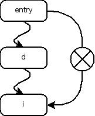
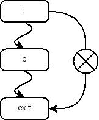
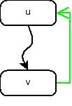
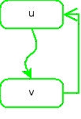
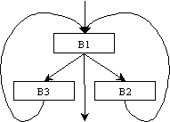

Table of Contents
08. Control Flow Analysis
Înainte de a putea optimiza un program, unui compilator îi sunt necesare componente care sa îl ajute sa “înțeleagă” cum folosește programul respectiv resursele disponibile.
Astfel, compilatorul trebuie sa fie capabil sa descrie:
- caracteristicile fluxului de control al programelor
- cum sunt manipulate datele
Astfel, mecanismele mai generale, dar mai puțin eficiente, pot fi înlocuite cu mecanisme mai specializate și mai eficiente.
Abordări ale analizei fluxului de control
Orice analiza a fluxului de control al unei rutine începe cu determinarea blocurilor de bază(basic blocks). Acest pas constituie rutina și construcția Control Flow Graph (CFG).
Abordarea descrisă în continuare folosește dominatorii pentru a descoperi buclele și a le memora, în vederea optimizării ulterioare. Această abordare este suficientă optimizoarelor care analizează fluxul de date în mod iterativ.
O abordare mai sofisticată este analiza intervalelor (Interval Analysis). Aceasta include o serie de metode de a analiza structura unei rutine și de a o descompune în regiuni imbricate denumite intervale. Această structură de regiuni imbricate este descrisă printr-un arbore (denumit arbore de control) care este foarte util în structurarea și îmbunătățirea analizei fluxului de date. Această abordare este mai complexă și nu va fi discutată aici.
Exemplu
Înainte de a descrie tehnici formale folosite în analiza fluxului de control și în analiza fluxului de date, să prezentăm un exemplu simplu.
Fie rutina C de mai jos, care calculează termenul m din șirul lui Fibonacci (m ≥ 0). Lângă secvența de cod C, am dat și o posibilă descriere într-un limbaj intermediar a acestei funcții.
| Cod sursă | Pseudocod generat |
|---|---|
unsigned int fib(unsigned int m) { unsigned int f0 = 0; unsigned int f1 = 1; unsigned int f2, i; if (m <= 1) return m; else { for(i = 2; i <= m; i++) { f2 = f0 + f1; f0 = f1; f1 = f2; } return f2; } } | 1 receive m 2 f0 <- 0 3 f1 <- 1 4 if m <= 1 goto L3 5 i <- 2 6 L1: if i <= m goto L2 7 return f2 8 L2: f2 <- f0+f1 9 f0 <- f1 10 f1 <- f2 11 i <- i+1 12 goto L1 13 L3: return m |
Primul pas este de a descoperi structura de control a programului. Această structură poate fi evidentă în codul sursă (if-then-else, cu o buclă pe partea cu else), însă, aceasta nu mai este la fel de evidentă în limbajul intermediar. Mai mult, chiar și în C, există situații mult mai complexe (ex. un for ar fi putut fi format din instrucțiuni if și goto).
Pentru a facilita înțelegerea metodei de analiză a fluxul de control, am reprezentat în figura de mai jos codul intermediar într-o formă “vizuală”, un flowchart.
{kind=link}
Basic blocks
Un block de bază (basic block) reprezintă o secvență de instrucțiuni care se execută întotdeauna una după alta. Formal, un basic block (bb) este o secvență maximală de instrucțiuni consecutive în care se poate intra doar prin intermediul primei instrucțiuni și din care se poate ieși doar prin intermediul ultimei instrucțiuni.
Determinare basic blocks
- Prima instrucțiune a unui basic block (denumită lider) poate fi:
- punctul de intrare în rutină
- ținta unei instrucțiuni de salt
- instrucțiunea imediat următoare unei instrucțiuni de salt
- Pentru a determina bb-urile care formează o rutina întâi se identifică toți liderii și apoi, pentru fiecare lider, includem în
bbtoate instrucțiunile de la lider pana la următorul lider sau până la sfârșitul rutinei.
Pe flowchart-ul de mai sus se vede că putem identifica cu ușurință blocurile de bază:
- nodurile 1-4 formează un basic block
- nodurile 8-11 formează alt basic block
- Toate celelalte noduri formează singure câte un basic block
Graful fluxului de control (CFG)
 generate cu LLVM")
Figura conţine cod intermediar LLVM și a fost obţinută executând următoarele comenzi:
sudo apt-get install clang clang -emit-llvm fibo.c -c -o fibo.bc sudo apt-get install dot2tex opt -dot-cfg fibo.bc ; dot -Tpdf cfg.fib.dot > cfg.fib.pdf SAU opt-3.0 -f -dot-cfg fibo.bc ; dot -Tpdf cfg.fib.dot > cfg.fib.pdf
În graf, există arc (muchie orientată) de la un nod la altul dacă există posibilitatea ca, imediat după execuția ultimei instrucțiuni din bb-ul din primul nod, să urmeze spre execuție prima instrucțiune din bb-ul din cel de-al doilea nod.
Există arce de la nodul entry la fiecare nod care reprezintă un basic block de intrare (liderul său poate fi prima instrucțiune executată la apelul rutinei). Analog, există arce de la fiecare nod ce reprezinta un basic block de ieșire (ultima instrucțiunea a bb-ului poate fi ultima instrucțiune executată la ieșirea din funcție) la nodul exit.
În continuare, definim:
- Succ(b) - setul de succesori ai unui basic block
- Pred(b) - setul de predecesori ai unui basic block.
Tipuri de basic blocks:
- Branch - blocul are mai mult de un succesor
- Join - blocul are mai mult de un predecesor
Dominatori și postdominatori
Relația de dominare
Pentru a determina buclele într-un CFG, definim întâi o relație binară pe nodurile grafului, numită dominare.
Nodul d domină nodul i (d dom i) dacă orice drum posibil de la nodul entry la nodul i include nodul d.
Nodul d domină strict nodul i (d sdom i) dacă d dom i și d != i.

{kind=link}
Proprietăți ale relației de dominare:
- Reflexivitate - un nod este propriul său dominator
- Antisimetrie - dacă A domină B și B domina A atunci A = B
- Tranzitivitate - dacă A domină B și B domină C atunci A domină C
Relația de dominare imediată
Nodul a este în relație de dominare imediată (a idom b) dacă și numai dacă:
pentru a != b, a idom b ⇔ a dom b și nu există c astfel încât c != a și c != b și a dom c și c dom b.
Există un singur dominator imediat pentru fiecare nod; îl vom nota cu idom (nod). Relația de dominare imediată formează un arbore cu nodurile CFG-ului a cărui rădăcină este nodul entry și ale cărui arcuri reprezintă relații de dominare imediată. Drumurile în acest arbore arată toate relațiile de dominare din CFG (vezi figura de mai sus).
Relația de post-dominare
Nodul p post-domină nodul i (p pdom i) dacă orice drum posibil de la nodul i la nodul exit include nodul p. 
{kind=link}
Arbori de dominare și post-dominare
Arborii de dominare(graf si LLVM IR) pentru programul Fibonacci.
{kind=link}
Arborele de postdominare pentru programul Fibonacci.
")
Bucle naturale și componente tare conexe
Arc înapoi
Un arc înapoi în CFG este un arc a cărui destinatie este întalnită înaintea nodului sursă intr-o parcurgere DFS. 
{kind=link}
Buclă naturală
Buclă naturală determinată de arcul înapoi v→u este definită ca fiind subgraful definit prin:
- mulțimea de noduri - formată din nodul u și toate nodurile din care poate fi atins nodul v fără a trece prin u
- mulțimea de arce - toate arcele conectând nodurile din mulțime.
Atenție! Pentru a avea buclă naturală u dom v și, deci, nu există noduri din care v poate fi atins fără a trece prin u și care să nu fie la rândul lor dominate de u. Astfel, nodul u este header-ul buclei.

{kind=link}
Introducerea nodului PRE-HEADER
Multe optimizari constau în mutarea codului din interiorul buclei imediat înaintea header-ului buclei. Pentru a garanta că avem un astfel de loc disponibil, introducem conceptul de pre-header, care este un nou basic block, inițal gol, plasat imediat înaintea header-ului buclei. Astfel, toate arcele care înainte intrau în header, venind din afara buclei, acum vor intra în pre-header. În plus, există un singur arc de la pre-header la header. Figura de mai jos arată rezultatul introducerii unui pre-header pentru o buclă.
{kind=link}
{kind=link}
Bucle imbricate
Nu este greu de observat că dacă două bucle au header-e diferite, ele sunt fie disjuncte, fie imbricate. Pe de altă parte, dacă două bucle au același header (ca în cazul din figura de mai jos), nu este foarte clar dacă una este imbricată în cealaltă (și care este imbricată în care) sau dacă ele formeaza împreună o singură buclă. 
{kind=link}
Pornind de la faptul ca, fără mai multe detalii despre codul sursa, nu se poate distinge între aceste două situații, astfel de cazuri vor fi tratate ca fiind o singură buclă (există o modalitate de analiză a fluxului de control denumită analiză structurală care poate face acestă distincție).
Regiuni improprii
O buclă naturală este doar un tip particular de componentă tare conexă. În practică, deși rar, pot apărea și alte structuri de tip buclă cu mai multe puncte de intrare (în special în programele nestructurate). Deși asemenea structuri sunt rare, faptul că ele totuși apar, ne obligă să le luăm în considerare. Cea mai generală structură de tip buclă care poate să apară este o componentă tare conexă a CFG-ului.
CFG-ul este bine-structurat dacă acesta conține doar bucle naturale.
Formal, un CFG G=<N,E> este bine-structurat dacă mulțimea arcelor poate fi partitionată în două mulțimi:
- mulțimea arcelor înainte - acele arce care formează un graf aciclic orientat (DAG) în care fiecare nod poate fi atins din nodul entry
- multimea arcelor înapoi - acele arce care sunt conforme cu definiția de mai sus, adică nodul destinație domină nodul sursă
Anumite șabloane de flux de control pot face un CFG prost-structurat. Astfel de sabloane se numesc regiuni improprii și în general sunt componente tare conexe cu mai multe intări. Un exemplu de regiune improprie este dat și în figura de mai jos (stanga).
| Regiune improprie | După “node-splitting” |
|---|---|
 |  |
Regiunile improprii sunt un impediment în special în analiza fluxului de date. Există mai multe metode de a trata problema regiunilor improprii dintr-un CFG dintre care menționăm:
- analiza iterativă a fluxului de date
- node-splitting pentru transformarea unui CFG ireductibil într-unul reductibil
(vezi exemplul de mai sus (figura din dreapta) în care tehnica a fost aplicată pentru nodul B3).
Opțional de citit
- Basic Blocks and Flow Graphs, p528, Dragon book, 2nd edition
Exerciții de laborator (11p)
Exercițiul 1 - hands-on, pe foaie (2p)
Pentru următorul CFG:

- găsiți arcele inapoi
- găsiți nodurile dominate de basic blockurile 2 și 4.
- desenați arborele de dominare
- determinați nodurile de tip branch și cele de tip join
- găsiți buclele naturale și nenaturale
- găsiți buclele imbricate
Exercițiul 2 - no loops (1p)
Este posibil ca o funcție care conține unul din cuvintele cheie for/while/do while să nu conțină bucle? Dacă da, în ce condiții ?
Scrieți o funcție în C și desenați CFG-ul corespunzător folosind toolchain-ul LLVM.
Exercițiul 3 - no for/while/do while (1p)
Dați exemplu de o funcție care nu conține cuvintele cheie for/while/do while, dar conține bucle în CFG.
Scrieți o funcție în C și desenați CFG-ul corespunzător folosind toolchain-ul LLVM.
Exercițiul 4 - goto (1p)
Dați exemplu de o funcție care nu conține for/while/do while, conține maxim o instrucțiune goto și are o buclă nenaturală.
Scrieți o funcție în C și desenați CFG-ul corespunzător folosind toolchain-ul LLVM.
Exercițiul 5 - transform (3p)
Transformați următoarea regiune improprie într-o buclă naturală plecând de la următorul cod :
![Exemplu de split]](../../../../_detail/cpl/labs/laborator-08-exsplit.png%3Fid=cpl%253Alabs-2015%253A08.html "Exemplu de split]")
int f (int x, int y) { x = x + 1; switch(y) { case 2: do { L2: x = x - 2; if (x > 0) goto L4; case 3: x = x * 3; if (x <= 6) { x -= 5; } else { default: L4: x <<= 4; if (x != 16) goto L2; x = y + 6; } y = x + 7; } while(y < x); } return x; }
Exercițiul 6 - LLVM pass (3p)
Scrieți un LLVM pass pentru a afișa:
- toate basic block-urile unui program
- pentru fiecare basic-block:
- basic block-urile predecesoare
- basic block-urile următoare
Hints:
- instrucțiuni despre este creat pass-ul Hello din sursele de LLVM (inclusiv cum să faceți setup-ul): Start writing hello world
- instrucțiuni despre accesarea succesorilor și predecesorilor unui basic block: Iterating over predecessors and successors of blocks
Detalii despre LLVM passes.